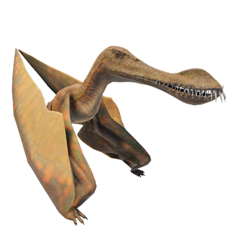

Useful Website
The pterosaur Maaradactylus has a wingspan of around 6m and is easy to recognise thanks to its unusual appearance – its jaws feature curved crests on both the upper and lower sections and contain rows of sharp teeth. Native to South America, the genus is named after the Brazilian legend Maara, a mystical woman who transformed into a monster with large teeth.
